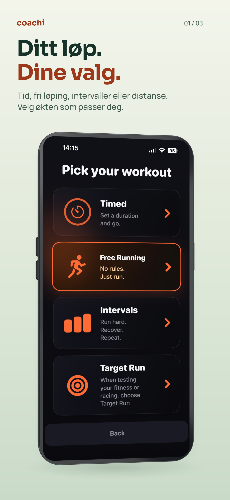
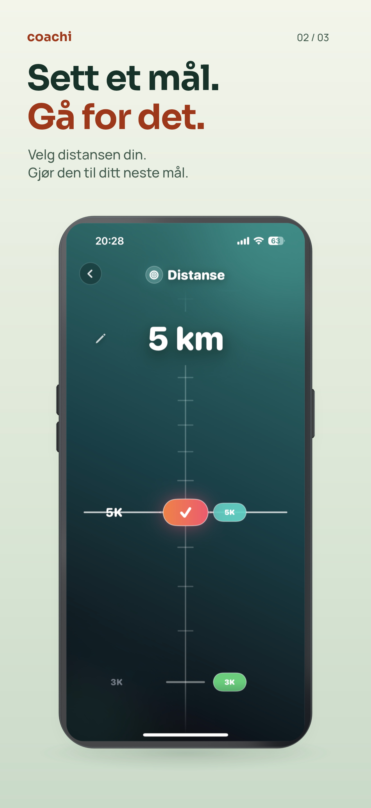
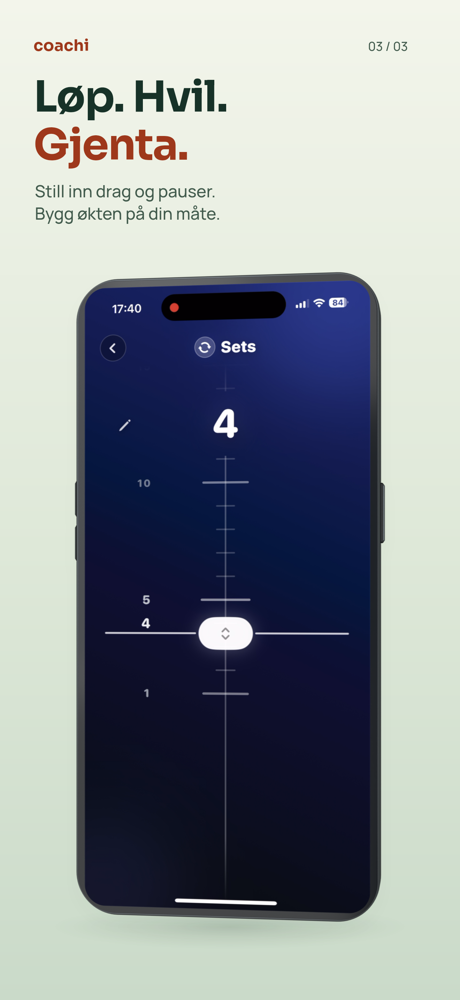

Coachi · Produktpresentasjon
Ditt løp kommer først.
Kortere overskrifter. Tydeligere fordeler. Ekte Coachi-skjermer.



Ett bilde. Én grunn til å se videre.
Sora i overskriftene og Manrope i støtteteksten gir et tydeligere hierarki. Fordelen står over telefonen, med bevisste linjeskift og mer luft. Hvert bilde fungerer også alene.
Local review · Ikke lastet opp
Dette er 3D-designutkast uten maskinvaremerke, ikke native skjermbilder eller opplastingsklar Apple-grafikk. De flate Store-eksportene er uendret. Noen appskjermer er fortsatt på engelsk.
Kilde- og renderregisterWatch-designet er funnet
Den godkjente Watch-HTML-en fra 26. august finnes og er dokumentert i kilderegisteret. Simulatoren feiler fortsatt ved oppstart. Ingen gamle Watch-bilder er satt inn.
Watch HTML / capture status